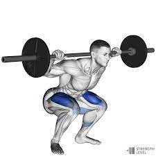
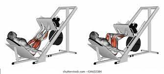
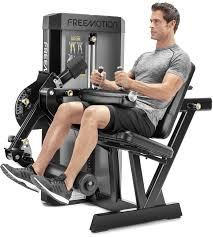
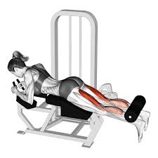

First and foremost, leg exercises target some of your body’s biggest muscles – the largest being your glutes – the foundations on which your fitness is built. Training legs means burning more calories, elevating your T-levels, boosting your big lifts, improving your mobility, and, of course, building strength, power and mass.
You might not know it, but leg exercises are also critical to brain and nervous system health. Your wheels send important signals to the brain that help produce neural cells (essential for handling stress and adapting to challenges) in particular during weight-bearing exercise, research published in Frontiers revealed.
Why you Shouldn't Skip Leg Day
On the flip side, skipping leg day one too many times can make you unbalanced and more susceptible to injury.
Need more convincing? How about this: performing single-leg exercises, like the Bulgarian spilt squat, pistol squat and single leg curl listed below, won't just good give you powerful legs, it'll also help you to engage your core muscles and develop better balance. If you're already injured moves like these are good for rehabilitation, since working one side of the body can stimulate the same muscles on the other side of the body too.
Squat

Muscles Worked/benefits
Gluteus maximus, minimus, and medius (buttocks)
quadriceps (front of the thigh)
hamstrings (back of the thigh)
calves.
Equipment needed
Top Best Squat Workout Equipment
Star Uno Ab Squat Machine.
Goplus 3-in-1 Squat Machine.
Soozier 3-in-1 Home Gym Machine.
Conquer 3-in-1 Home Gym Machine.
Steps
Stand with your hands on the back of your head and your feet shoulder-width apart with your feet turned out slightly to open the hip joint.
Lower your body until your thighs are parallel to the floor.
Pause, then return to the starting position.
Repeat
Leg Press

Muscles Worked/benefits
Quads
Hamstrings
Glutes
Even calves
Equipment needed
The standard horizontal leg press
the 45-degree leg press
Steps
Brace your abdominal muscles and push the platform away with your heels and forefoot. Your heels should remain flat on the footplate. The front of your foot or toes should never be used exclusively to move the pad forward.
While exhaling, extend your legs and keep your head and back flat against the seat pad. Extend with slow control rather than with an explosive movement.
Pause at the top of the movement. Do not lock out your knees, and ensure that they are not bowing out or in.
While inhaling, return the footplate to the starting position by gradually bending the knees. Keep the feet and back flat throughout.
Repeat.
Leg Curl


Muscles Worked/benefits
Hamstrings
Calves
Thigh
Equipment needed
Leg Extension Machine
Cam Series Leg Curl Machine
Gym Equipment Prone Leg Curl
Steps
Stand with your feet hip-width apart. Place your hands on your waist or on a chair for balance
Slowly bend your right knee, bringing your heel toward your butt. Keep your thighs parallel.